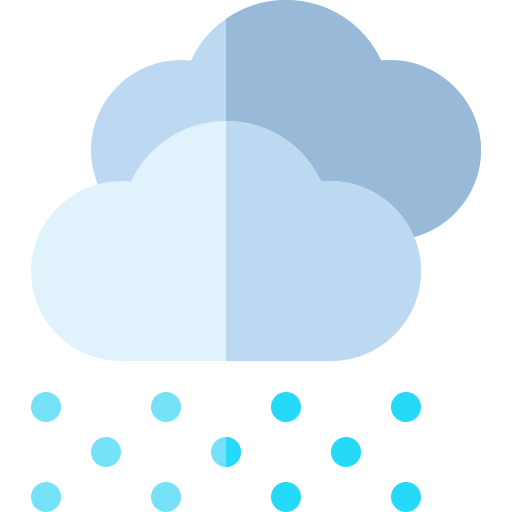

Le Louvre
Le château du Louvre était un château fort construit par le
roi Philippe-Auguste pour renforcer lʼenceinte quʼil avait
construite autour de Paris pour protéger la ville. Il a été
démoli par étapes pour laisser la place au palais du Louvre.
La construction du Louvre est indissociable de l'histoire de
Paris. Elle s'étend sur plus de 800 ans, bien que le plan général
du palais n'ait été imaginé qu'à la Renaissance. Charles V y
établit sa résidence, donnant au palais un statut qu'il a conservé
jusqu'au règne de Louis XIV.
Le musée du Louvre, inauguré en 1793 sous l'appellation Muséum
central des arts de la République dans le palais du Louvre,
ancienne résidence royale située au centre de Paris, est
aujourd'hui le plus grand musée d'art et d'antiquités au monde. Sa
surface d'exposition est de 72 735 m².
Tarif : entre 20€ et 50€
2
L'Arc de Triomphe
L’arc de triomphe de l’Étoile, souvent appelé simplement l’Arc de Triomphe, dont la construction, décidée par l'empereur Napoléon Ier, débuta en 1806 et s'acheva en 1836 sous Louis-Philippe, est situé à Paris, dans les 8e, 16e, et 17e arrondissements. Napoléon Ier, au lendemain de la bataille d'Austerlitz, déclare aux soldats français : « Vous ne rentrerez dans vos foyers que sous des arcs de triomphe. » L'Empereur s'est référé aux arcs de triomphe érigés sous l’Empire romain afin de commémorer un général vainqueur défilant à la tête de ses troupes. L'Arc de Triomphe fait partie des monuments nationaux à forte connotation historique. Cette importance s'est renforcée depuis que la dépouille du Soldat inconnu, tué lors de la Première Guerre mondiale, y a été inhumée le 28 janvier 1921. Deux ans plus tard, André Maginot, alors ministre de la Guerre, a soutenu le projet d’y installer une « flamme du souvenir » qui a été allumée pour la première fois le 11 novembre 1923 par le ministre.
3
Notre Dame de Paris
La cathédrale Notre-Dame de Paris, en forme courte Notre-Dame, est la cathédrale de l'archidiocèse de Paris, en France. Elle est située dans l'est de l'île de la Cité, dans le 4e arrondissement de Paris. Sa façade occidentale domine le parvis Notre-Dame - place Jean-Paul-II. Sa construction commencée sous l'impulsion de l'évêque Maurice de Sully, s'étend sur plus de deux siècles, de 1163 au milieu du xive siècle. Le style n’est donc pas d'une uniformité totale : la cathédrale possède ainsi des caractères du gothique primitif (voûtes sexpartites de la nef) et du gothique rayonnant. Les deux rosaces qui ornent chacun des bras du transept sont parmi les plus grandes d’Europe, et mesurent chacune treize mètres de diamètre. Lors de son achèvement, la cathédrale est l'une des plus grandes d'Occident. Après la tourmente révolutionnaire, la cathédrale bénéficie de 1844 à 1864 d'une restauration importante et parfois controversée, sous la direction de l’architecte Viollet-le-Duc, qui y incorpore des éléments et des motifs inédits.
4
La Seine
La Seine à Paris fait partie du paysage de la capitale de la
France. La Seine coupe Paris en son milieu même si la rive droite
occupe un espace plus important que la rive gauche. Dans Paris, sa
longueur occupe près de 13 kilomètres, avec une profondeur variant
entre 3,40 et 5,70 mètres. Sa largeur varie, elle, de 30 à 200
mètres. La retenue normale du bief de Paris, c'est-à-dire
l'altitude de la surface par rapport au niveau de la mer, est de
26,72 mètres. À Paris, la Seine est traversée par 37 ponts dont
quatre passerelles accessibles uniquement aux piétons.
Aujourd'hui, il est possible de vivre une visite inédite de Paris
en bateau-mouche.
Tarif : 15€
5
La Tour Eiffel
La tour Eiffel Écouter est une tour de fer puddlé de 324
mètres de hauteur (avec antennes) située à Paris, à
l’extrémité nord-ouest du parc du Champ-de-Mars en bordure de
la Seine dans le 7e arrondissement. Son adresse officielle est 5,
avenue Anatole-France.
Construite par Gustave Eiffel et ses collaborateurs pour
l’Exposition universelle de Paris de 1889, et initialement nommée
« tour de 300 mètres », ce monument est devenu le symbole de la
capitale française, et un site touristique de premier plan : il
s’agit du second site culturel français payant le plus visité en
2011, avec 7,1 millions de visiteurs dont 75 % d'étrangers en 2011,
la cathédrale Notre-Dame de Paris étant en tête des monuments à
l'accès libre avec 13,6 millions de visiteurs estimés mais il reste
le monument payant le plus visité au monde.
Depuis son ouverture au public, elle a accueilli plus de 300
millions de visiteurs.
Tarif : entre 15€ et 20€
Un point météo


